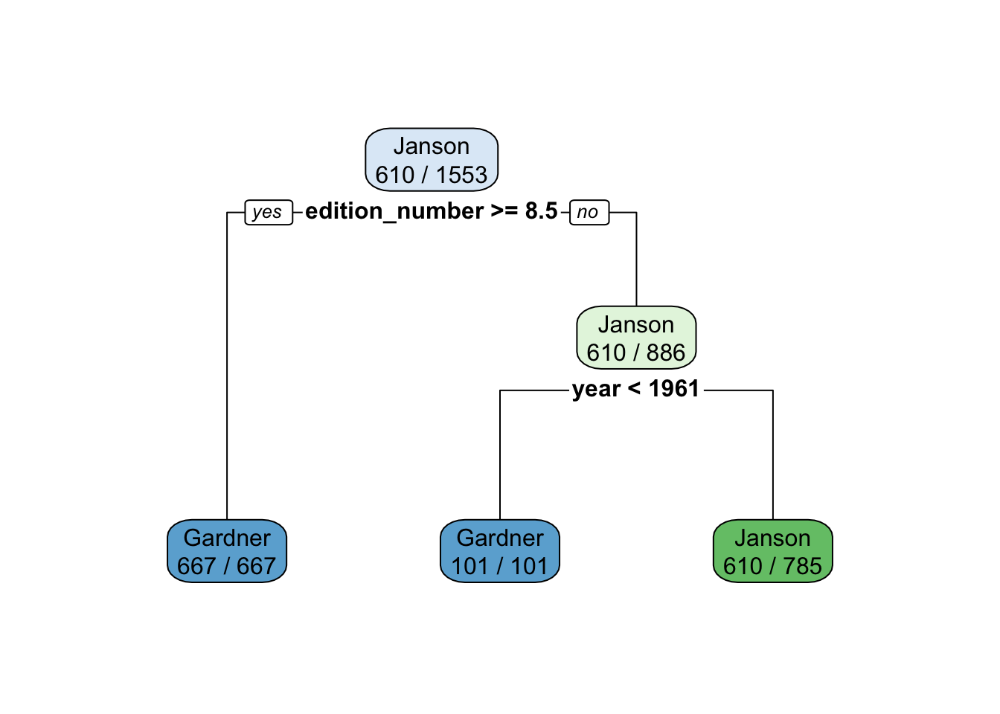

if(!require(pacman))
install.packages("pacman")
pacman::p_load(tidyverse, rpart, rpart.plot, caret,
lattice, sampling, pROC, mlbench)hw-03-01-eshaanmathakari
Classification: Basic Concepts and Techniques
Install packages
Art History Data
The data was collected to assess the demographic representation of artists through editions of Janson’s History of Art and Gardner’s Art Through the Ages, two of the most popular art history textbooks used in the American education system.
Here is a basic summary of the provided data columns:
artist_name: The name of the artist.
edition_number: The edition number associated with the artwork.
year: The year when the artwork was created.
artist_nationality: The nationality of the artist.
artist_nationality_other: Additional information about the artist’s nationality (if applicable).
artist_gender: The gender of the artist (e.g., Male or Female).
artist_race: The racial background or ethnicity of the artist (e.g., Black or African American, White).
artist_ethnicity: The artist’s ethnicity, specifying whether they are of Hispanic or Latino origin.
book: The name of the book or collection to which the artwork belongs.
space_ratio_per_page_total: A ratio representing the space occupied by the artwork on a page in the book.
artist_unique_id: An identifier associated with the artist.
moma_count_to_year: The count related to the Museum of Modern Art (MoMA) up to a specific year.
whitney_count_to_year: The count related to the Whitney Museum up to a specific year.
artist_race_nwi: The artist’s race or ethnicity, with “Non-White” or “White” as the options.
The data includes information about various artists, their artworks, and related details, such as their gender, nationality, race, and the museums where their work is counted.
artists <- read_csv("https://raw.githubusercontent.com/rfordatascience/tidytuesday/master/data/2023/2023-01-17/artists.csv")
head(artists)# A tibble: 6 × 14
artist_name edition_number year artist_nationality artist_nationality_other
<chr> <dbl> <dbl> <chr> <chr>
1 Aaron Douglas 9 1991 American American
2 Aaron Douglas 10 1996 American American
3 Aaron Douglas 11 2001 American American
4 Aaron Douglas 12 2005 American American
5 Aaron Douglas 13 2009 American American
6 Aaron Douglas 14 2013 American American
# ℹ 9 more variables: artist_gender <chr>, artist_race <chr>,
# artist_ethnicity <chr>, book <chr>, space_ratio_per_page_total <dbl>,
# artist_unique_id <dbl>, moma_count_to_year <dbl>,
# whitney_count_to_year <dbl>, artist_race_nwi <chr>A tibble is a data structure in R, part of the tidyverse ecosystem, that is designed to make data manipulation and analysis easier and more consistent. It is an enhanced and modern alternative to the traditional data frame in R.
library(tidyverse)
# Convert the artists dataset into a tibble.
as_tibble(artists)# A tibble: 3,162 × 14
artist_name edition_number year artist_nationality artist_nationality_o…¹
<chr> <dbl> <dbl> <chr> <chr>
1 Aaron Douglas 9 1991 American American
2 Aaron Douglas 10 1996 American American
3 Aaron Douglas 11 2001 American American
4 Aaron Douglas 12 2005 American American
5 Aaron Douglas 13 2009 American American
6 Aaron Douglas 14 2013 American American
7 Aaron Douglas 15 2016 American American
8 Aaron Douglas 16 2020 American American
9 Adélaïde Labi… 14 2013 French French
10 Adélaïde Labi… 15 2016 French French
# ℹ 3,152 more rows
# ℹ abbreviated name: ¹artist_nationality_other
# ℹ 9 more variables: artist_gender <chr>, artist_race <chr>,
# artist_ethnicity <chr>, book <chr>, space_ratio_per_page_total <dbl>,
# artist_unique_id <dbl>, moma_count_to_year <dbl>,
# whitney_count_to_year <dbl>, artist_race_nwi <chr>Remove irrelevant columns for prediction:
artist_name because the artist’s name itself might not be a strong predictor.
# List of columns to be removed
columns_to_remove <- c(
'artist_name'
)
# Remove the specified columns
artists <- select(artists, -one_of(columns_to_remove))
head(artists)# A tibble: 6 × 13
edition_number year artist_nationality artist_nationality_other artist_gender
<dbl> <dbl> <chr> <chr> <chr>
1 9 1991 American American Male
2 10 1996 American American Male
3 11 2001 American American Male
4 12 2005 American American Male
5 13 2009 American American Male
6 14 2013 American American Male
# ℹ 8 more variables: artist_race <chr>, artist_ethnicity <chr>, book <chr>,
# space_ratio_per_page_total <dbl>, artist_unique_id <dbl>,
# moma_count_to_year <dbl>, whitney_count_to_year <dbl>,
# artist_race_nwi <chr>Here we are transforming logical columns to factors with specific levels and character columns to factors in a data.
artists <- artists |>
# Convert logical columns to factors with levels 'TRUE' and 'FALSE'.
mutate(across(where(is.logical), factor, levels = c(TRUE, FALSE))) |>
# Convert character columns to factors.
mutate(across(where(is.character), factor))summary(artists) edition_number year artist_nationality artist_nationality_other
Min. : 1.000 Min. :1926 American:908 American:908
1st Qu.: 5.000 1st Qu.:1986 French :870 British :317
Median : 8.000 Median :1996 British :317 French :870
Mean : 8.223 Mean :1994 German :256 German :256
3rd Qu.:12.000 3rd Qu.:2009 Spanish : 94 Other :717
Max. :16.000 Max. :2020 Italian : 74 Spanish : 94
(Other) :643
artist_gender artist_race
Female: 342 American Indian or Alaska Native : 12
Male :2762 Asian : 79
N/A : 58 Black or African American : 83
N/A : 29
Native Hawaiian or Other Pacific Islander: 23
White :2936
artist_ethnicity book
Hispanic or Latino origin : 158 Gardner:1943
Not Hispanic or Latino origin:2946 Janson :1219
NA's : 58
space_ratio_per_page_total artist_unique_id moma_count_to_year
Min. :0.0946 Min. : 1.0 Min. : 0.000
1st Qu.:0.3082 1st Qu.:108.0 1st Qu.: 0.000
Median :0.4093 Median :189.0 Median : 1.000
Mean :0.5301 Mean :201.8 Mean : 4.306
3rd Qu.:0.5941 3rd Qu.:305.8 3rd Qu.: 5.000
Max. :3.7967 Max. :413.0 Max. :64.000
whitney_count_to_year artist_race_nwi
Min. : 0.000 Non-White: 226
1st Qu.: 0.000 White :2936
Median : 0.000
Mean : 1.957
3rd Qu.: 0.000
Max. :40.000
Handling missing values:
# Check for missing values in the dataset
missing_values <- colSums(is.na(artists))
print(missing_values) edition_number year
0 0
artist_nationality artist_nationality_other
0 0
artist_gender artist_race
0 0
artist_ethnicity book
58 0
space_ratio_per_page_total artist_unique_id
0 0
moma_count_to_year whitney_count_to_year
0 0
artist_race_nwi
0 # Remove rows with missing values
artists <- na.omit(artists)
missing_values <- colSums(is.na(artists))
print(missing_values) edition_number year
0 0
artist_nationality artist_nationality_other
0 0
artist_gender artist_race
0 0
artist_ethnicity book
0 0
space_ratio_per_page_total artist_unique_id
0 0
moma_count_to_year whitney_count_to_year
0 0
artist_race_nwi
0 Decision Trees
A decision tree is a tree-like structure that represents a series of decisions and their possible consequences.
Recursive Partitioning (similar to CART) uses the Gini index to make splitting decisions and early stopping (pre-pruning).
library(rpart)Create Tree With Default Settings (uses pre-pruning)
# Build a decision tree with default settings
tree_default <- artists |>
rpart(book ~ ., data = _)
tree_defaultn= 3104
node), split, n, loss, yval, (yprob)
* denotes terminal node
1) root 3104 1219 Gardner (0.6072809 0.3927191)
2) edition_number>=8.5 1303 0 Gardner (1.0000000 0.0000000) *
3) edition_number< 8.5 1801 582 Janson (0.3231538 0.6768462)
6) year< 1988.5 954 372 Gardner (0.6100629 0.3899371)
12) edition_number>=3.5 459 0 Gardner (1.0000000 0.0000000) *
13) edition_number< 3.5 495 123 Janson (0.2484848 0.7515152)
26) year< 1955.5 123 0 Gardner (1.0000000 0.0000000) *
27) year>=1955.5 372 0 Janson (0.0000000 1.0000000) *
7) year>=1988.5 847 0 Janson (0.0000000 1.0000000) *Here we are trying to predict whether a particular artist is included in Janson’s History of Art or Gardner’s Art Through the Ages.
Plotting
library(rpart.plot)
rpart.plot(tree_default, extra = 2)This decision tree predicts the book (“Gardner” or “Janson”) based on the features in the dataset. The tree splits the data into subsets based on specific conditions related to edition_number and year.
Create a Full Tree
To create a full tree, we set the complexity parameter cp to 0 (split even if it does not improve the tree) and we set the minimum number of observations in a node needed to split to the smallest value of 2.
# Build a decision tree
tree_full <- artists |>
rpart(book ~ . , data = _,
control = rpart.control(minsplit = 2, cp = 0))
rpart.plot(tree_full, extra = 2,
roundint=FALSE,
box.palette = list("Gy", "Gn", "Bu", "Bn",
"Or", "Rd", "Pu")) # specify 7 colorsWhen cp = 0 This means that no cost complexity pruning is applied. In other words, the tree is allowed to grow until it perfectly fits the training data, which can result in a very complex, deep, and overfit tree.
tree_fulln= 3104
node), split, n, loss, yval, (yprob)
* denotes terminal node
1) root 3104 1219 Gardner (0.6072809 0.3927191)
2) edition_number>=8.5 1303 0 Gardner (1.0000000 0.0000000) *
3) edition_number< 8.5 1801 582 Janson (0.3231538 0.6768462)
6) year< 1988.5 954 372 Gardner (0.6100629 0.3899371)
12) edition_number>=3.5 459 0 Gardner (1.0000000 0.0000000) *
13) edition_number< 3.5 495 123 Janson (0.2484848 0.7515152)
26) year< 1955.5 123 0 Gardner (1.0000000 0.0000000) *
27) year>=1955.5 372 0 Janson (0.0000000 1.0000000) *
7) year>=1988.5 847 0 Janson (0.0000000 1.0000000) *Training error on tree with pre-pruning
Here we are making predictions using a decision tree model (tree_default) on the artists data frame
# Predict book using the decision tree model
predict(tree_default, artists ) |> head () Gardner Janson
1 1 0
2 1 0
3 1 0
4 1 0
5 1 0
6 1 0Predicts the book for each record in the ‘artists’ dataset, which is either “Gardner” (1) or “Janson” (0).
By specifying type = “class”, you obtain the class labels that the decision tree model predicts for each observation in the artists data frame.
# Predict class labels (Gardner or Janson)
pred <- predict(tree_default, artists , type="class")
head(pred) 1 2 3 4 5 6
Gardner Gardner Gardner Gardner Gardner Gardner
Levels: Gardner Jansonconfusion_table <- with(artists, table(book , pred))
confusion_table pred
book Gardner Janson
Gardner 1885 0
Janson 0 1219The model correctly predicted “Gardner” 1885 times (True Positives) and “Janson” 1219 times (True Negatives). There were no False Positives or False Negatives
# Calculate the total number of correct predictions
correct <- confusion_table |> diag() |> sum()
correct[1] 3104# Calculate the total number of errors
error <- confusion_table |> sum() - correct
error[1] 0accuracy <- correct / (correct + error)
accuracy[1] 1Use a function for accuracy
accuracy <- function(truth, prediction) {
tbl <- table(truth, prediction)
sum(diag(tbl))/sum(tbl)
}
accuracy(artists |> pull(book), pred)[1] 1Training error of the full tree
accuracy(artists |> pull(book),
predict(tree_full, artists, type = "class"))[1] 1Make Predictions for New Data
Make up my own artist: Artsist in year 2020 with edition number 17.
my_artist <- tibble(edition_number = 17 ,year= 2020,artist_nationality = "American",artist_nationality_other = "Other",artist_gender = "Female",artist_race = "Black or African American",artist_ethnicity = "Not Hispanic or Latino origin", book = NA, space_ratio_per_page_total = 0.5344869907,artist_unique_id = 10,moma_count_to_year = 15,whitney_count_to_year = 5,artist_race_nwi = "Non-White")Fix columns to be factors like in the training set.
# Convert character columns in my_artist to factors
my_artist <- my_artist |>
mutate(across(where(is.character), factor))
my_artist# A tibble: 1 × 13
edition_number year artist_nationality artist_nationality_other artist_gender
<dbl> <dbl> <fct> <fct> <fct>
1 17 2020 American Other Female
# ℹ 8 more variables: artist_race <fct>, artist_ethnicity <fct>, book <lgl>,
# space_ratio_per_page_total <dbl>, artist_unique_id <dbl>,
# moma_count_to_year <dbl>, whitney_count_to_year <dbl>,
# artist_race_nwi <fct>Make a prediction using the default tree
predict(tree_default , my_artist, type = "class") 1
Gardner
Levels: Gardner JansonModel Evaluation with Caret
The package caret makes preparing training sets, building classification (and regression) models and evaluation easier.
library(caret)Set random number generator seed to make results reproducible
set.seed(2000)Hold out Test Data
Test data is not used in the model building process and set aside purely for testing the model. Here, we partition data the 80% training and 20% testing.
# Create a data partition
inTrain <- createDataPartition(y = artists$book, p = .8, list = FALSE)
# Extract the training set
artists_train <- artists |> slice(inTrain)# Extract the testing set
artists_test <- artists |> slice(-inTrain)Learn a Model and Tune Hyperparameters on the Training Data
The package caret combines training and validation for hyperparameter tuning into a single function called train(). It internally splits the data into training and validation sets and thus will provide you with error estimates for different hyperparameter settings.
fit <- artists_train |>
train(book ~ .,
data = _ ,
method = "rpart",
control = rpart.control(minsplit = 2),
trControl = trainControl(method = "cv", number = 10),
tuneLength = 5)
fitCART
2484 samples
12 predictor
2 classes: 'Gardner', 'Janson'
No pre-processing
Resampling: Cross-Validated (10 fold)
Summary of sample sizes: 2236, 2236, 2235, 2236, 2235, 2236, ...
Resampling results across tuning parameters:
cp Accuracy Kappa
0.0000000 1.0000000 1.0000000
0.1298668 0.9605404 0.9188247
0.2597336 0.8111942 0.6354258
0.3896004 0.8111942 0.6354258
0.5194672 0.7009726 0.3035893
Accuracy was used to select the optimal model using the largest value.
The final value used for the model was cp = 0.In this case, the model with cp = 0 was selected as the final model due to its perfect accuracy on the training data.
rpart.plot(fit$finalModel, extra = 2,
box.palette = list("Gy", "Gn", "Bu", "Bn", "Or", "Rd", "Pu"))# Compute variable importance
varImp(fit)rpart variable importance
only 20 most important variables shown (out of 72)
Overall
edition_number 100.0000
year 79.6051
space_ratio_per_page_total 18.7366
moma_count_to_year 3.7772
artist_raceAsian 1.9624
artist_nationalityJapanese 1.5568
artist_nationalityFrench 1.3456
artist_nationalityMexican 0.4140
artist_nationalityHungarian-French 0.3783
artist_nationalityArgentine 0.0000
artist_nationalityItalian 0.0000
artist_nationality_otherGerman 0.0000
`artist_nationalityN/A` 0.0000
artist_nationalityCzech 0.0000
artist_unique_id 0.0000
`artist_nationalityRussian-French` 0.0000
`artist_nationalitySwiss-German` 0.0000
`artist_raceN/A` 0.0000
`artist_nationalityDanish-French` 0.0000
artist_nationalityRussian 0.0000Here is the variable importance without competing splits.
# Compute variable importance
imp <- varImp(fit, compete = FALSE)
imprpart variable importance
only 20 most important variables shown (out of 71)
Overall
edition_number 100.00
year 53.84
artist_unique_id 0.00
`artist_nationalityPakistani-American` 0.00
artist_nationalityHungarian 0.00
artist_nationalityBelgian 0.00
artist_nationalityPeruvian 0.00
artist_nationalityPolynesian 0.00
artist_nationalityCanadian 0.00
`artist_nationalityHungarian-French` 0.00
artist_nationalityAustralian 0.00
artist_genderMale 0.00
artist_nationalityMexican 0.00
artist_nationalityJapanese 0.00
moma_count_to_year 0.00
`artist_nationalityItalian-American` 0.00
`artist_nationalityGerman-American` 0.00
artist_nationalityAustrian 0.00
artist_nationalityKorean 0.00
artist_nationalityCzech 0.00ggplot(imp)edition_number has the highest importance score, represented as 100.00. year has an importance score of 53.84, indicating it is also a significant predictor. The other predictor variables listed have importance scores of 0.00, suggesting they have little to no impact on the model’s predictive performance.
Testing: Confusion Matrix and Confidence Interval for Accuracy
Use the best model on the test data
# Make predictions on test data
pred <- predict(fit, newdata = artists_test)# Calculate a confusion matrix
confusionMatrix(data = pred,
ref = artists_test |> pull(book))Confusion Matrix and Statistics
Reference
Prediction Gardner Janson
Gardner 377 0
Janson 0 243
Accuracy : 1
95% CI : (0.9941, 1)
No Information Rate : 0.6081
P-Value [Acc > NIR] : < 2.2e-16
Kappa : 1
Mcnemar's Test P-Value : NA
Sensitivity : 1.0000
Specificity : 1.0000
Pos Pred Value : 1.0000
Neg Pred Value : 1.0000
Prevalence : 0.6081
Detection Rate : 0.6081
Detection Prevalence : 0.6081
Balanced Accuracy : 1.0000
'Positive' Class : Gardner
The accuracy is 1.0,Sensitivity (True Positive Rate) and Specificity (True Negative Rate) are also both 1.0, indicating perfect performance.
Model Comparison
We will compare decision trees with a k-nearest neighbors (kNN) classifier. We will create fixed sampling scheme (10-folds) so we compare the different models using exactly the same folds. It is specified as trControl during training.
# Create cross-validation folds
train_index <- createFolds(artists_train$book, k = 10)Build models
# Fit a classification model using the "rpart"
rpartFit <- artists_train |>
train(book ~ .,
data = _,
method = "rpart",
tuneLength = 10,
trControl = trainControl(method = "cv", indexOut = train_index)
)KNN fit:
knnFit <- artists_train |>
train(book ~ .,
data = _,
method = "knn",
preProcess = "scale",
tuneLength = 10,
trControl = trainControl(method = "cv", indexOut = train_index)
)Compare accuracy over all folds.
resamps <- resamples(list(
CART = rpartFit,
kNearestNeighbors = knnFit
))
summary(resamps)
Call:
summary.resamples(object = resamps)
Models: CART, kNearestNeighbors
Number of resamples: 10
Accuracy
Min. 1st Qu. Median Mean 3rd Qu. Max.
CART 1.0000000 1.0000000 1.0000000 1.0000000 1.0000000 1.0000000
kNearestNeighbors 0.9435484 0.9485887 0.9577423 0.9609324 0.9768469 0.9799197
NA's
CART 0
kNearestNeighbors 0
Kappa
Min. 1st Qu. Median Mean 3rd Qu. Max.
CART 1.0000000 1.0000000 1.0000000 1.0000000 1.0000000 1.0000000
kNearestNeighbors 0.8787963 0.8925138 0.9109738 0.9177668 0.9513072 0.9580087
NA's
CART 0
kNearestNeighbors 0library(lattice)
bwplot(resamps, layout = c(3, 1))Here “CART achieving perfect accuracy and Kappa, while kNearestNeighbors also has strong performance.
# Calculate the differences in performance metrics between two models
difs <- diff(resamps)
difs
Call:
diff.resamples(x = resamps)
Models: CART, kNearestNeighbors
Metrics: Accuracy, Kappa
Number of differences: 1
p-value adjustment: bonferroni summary(difs)
Call:
summary.diff.resamples(object = difs)
p-value adjustment: bonferroni
Upper diagonal: estimates of the difference
Lower diagonal: p-value for H0: difference = 0
Accuracy
CART kNearestNeighbors
CART 0.03907
kNearestNeighbors 1.754e-05
Kappa
CART kNearestNeighbors
CART 0.08223
kNearestNeighbors 1.852e-05 Feature Selection and Feature Preparation
Decision trees implicitly select features for splitting, but we can also select features manually.
library(FSelector)Univariate Feature Importance Score
These scores measure how related each feature is to the class variable. For discrete features (as in our case), the chi-square statistic can be used to derive a score.
weights <- artists_train|>
chi.squared(book ~ ., data = _) |>
as_tibble(rownames = "feature") |>
arrange(desc(attr_importance))
weights# A tibble: 12 × 2
feature attr_importance
<chr> <dbl>
1 year 0.831
2 edition_number 0.692
3 space_ratio_per_page_total 0.299
4 artist_nationality 0.241
5 artist_race 0.131
6 artist_race_nwi 0.0976
7 artist_nationality_other 0.0435
8 artist_ethnicity 0.0388
9 artist_gender 0.0280
10 artist_unique_id 0
11 moma_count_to_year 0
12 whitney_count_to_year 0 Provides insight into the importance of each feature in predicting the “book” categories and can help in feature selection or understanding which features are most relevant in the classification task.
plot importance in descending order (using reorder to order factor levels used by ggplot).
ggplot(weights,
aes(x = attr_importance, y = reorder(feature, attr_importance))) +
geom_bar(stat = "identity") +
xlab("Importance score") +
ylab("Feature")‘year’ has the highest importance score , indicating that it is a significant predictor and ‘edition_number’ follows with a relatively high importance score.
Get the 5 best features
subset <- cutoff.k(weights |>
column_to_rownames("feature"), 5)
subset[1] "year" "edition_number"
[3] "space_ratio_per_page_total" "artist_nationality"
[5] "artist_race" Use only the best 5 features to build a model (Fselector provides as.simple.formula)
f <- as.simple.formula(subset, "book")
fbook ~ year + edition_number + space_ratio_per_page_total + artist_nationality +
artist_race
<environment: 0x12949e828>“year,” “edition_number,” “space_ratio_per_page_total,” “artist_nationality,” and “artist_race.” are used as predictors in the modeling or analysis of the “book” variable.
m <- artists_train |> rpart(f, data = _)
rpart.plot(m, extra = 2, roundint = FALSE)artists_train |>
gain.ratio(book ~ ., data = _) |>
as_tibble(rownames = "feature") |>
arrange(desc(attr_importance))# A tibble: 12 × 2
feature attr_importance
<chr> <dbl>
1 edition_number 0.353
2 year 0.188
3 space_ratio_per_page_total 0.0476
4 artist_race 0.0466
5 artist_race_nwi 0.0254
6 artist_nationality 0.0160
7 artist_ethnicity 0.00408
8 artist_gender 0.00115
9 artist_nationality_other 0.000592
10 artist_unique_id 0
11 moma_count_to_year 0
12 whitney_count_to_year 0 gain.ratio function calculates the gain ratio for each predictor variable.
Feature Subset Selection
Often features are related and calculating importance for each feature independently is not optimal.
artists_train |>
cfs(book ~ ., data = _)[1] "edition_number" "year" “edition_number” and “year” are the two predictor variables selected by the CFS method.
Black-box feature selection uses an evaluator function (the black box) to calculate a score to be maximized. First, we define an evaluation function that builds a model given a subset of features and calculates a quality score.
evaluator <- function(subset) {
model <- artists_train|>
train(as.simple.formula(subset, "book"),
data = _,
method = "rpart",
trControl = trainControl(method = "boot", number = 5),
tuneLength = 0)
results <- model$resample$Accuracy
cat("Trying features:", paste(subset, collapse = " + "), "\n")
m <- mean(results)
cat("Accuracy:", round(m, 2), "\n\n")
m
}features <- artists_train |> colnames() |> setdiff("type")Using Dummy Variables for Factors
Nominal features (factors) are often encoded as a series of 0-1 dummy variables. First we use the original encoding of type as a factor with several values.
tree_predator <- artists_train |>
rpart(artist_nationality ~ book, data = _)
rpart.plot(tree_predator, extra = 2, roundint = FALSE, box.palette="Blues")Convert type into a set of 0-1 dummy variables using class2ind.
artists_train_dummy <- as_tibble(class2ind(artists_train$book)) |>
mutate(across(everything(), as.factor)) |>
add_column(artist_nationality = artists_train$artist_nationality)
artists_train_dummy# A tibble: 2,484 × 3
Gardner Janson artist_nationality
<fct> <fct> <fct>
1 1 0 American
2 1 0 American
3 1 0 American
4 1 0 American
5 1 0 French
6 1 0 French
7 1 0 French
8 1 0 French
9 1 0 French
10 1 0 French
# ℹ 2,474 more rowstree_artist_nationality <- artists_train_dummy |>
rpart(artist_nationality ~ .,
data = _,
control = rpart.control(minsplit = 2, cp = 0.01))
rpart.plot(tree_artist_nationality, roundint = FALSE, box.palette = list("Gy", "Gn", "Bu", "Bn", "Or", "Rd", "Pu"))fit <- artists_train |>
train(artist_race_nwi ~ book,
data = _,
method = "rpart",
control = rpart.control(minsplit = 2),
tuneGrid = data.frame(cp = 0.01))
fitCART
2484 samples
1 predictor
2 classes: 'Non-White', 'White'
No pre-processing
Resampling: Bootstrapped (25 reps)
Summary of sample sizes: 2484, 2484, 2484, 2484, 2484, 2484, ...
Resampling results:
Accuracy Kappa
0.9466562 0
Tuning parameter 'cp' was held constant at a value of 0.01rpart.plot(fit$finalModel, extra = 2)Class Imbalance
Classifiers have a hard time to learn from data where we have much more observations for one class (called the majority class). This is called the class imbalance problem.
library(rpart)
library(rpart.plot)Class distribution
ggplot(artists, aes(y = book)) + geom_bar()We already have a imbalanced problem as you can see Gardner instances are more that the Janson
Create test and training data. I use here a 50/50 split.
set.seed(1234)
inTrain <- createDataPartition(y = artists$book, p = .5, list = FALSE)
training_artists <- artists |> slice(inTrain)
testing_artists <- artists |> slice(-inTrain)Option 1: Use the Data As Is and Hope For The Best
fit <- training_artists |>
train(book ~ .,
data = _,
method = "rpart",
trControl = trainControl(method = "cv"))fitCART
1553 samples
12 predictor
2 classes: 'Gardner', 'Janson'
No pre-processing
Resampling: Cross-Validated (10 fold)
Summary of sample sizes: 1397, 1398, 1398, 1398, 1397, 1398, ...
Resampling results across tuning parameters:
cp Accuracy Kappa
0.09672131 0.9774194 0.9539383
0.17786885 0.8712159 0.7489398
0.54754098 0.7057858 0.3113405
Accuracy was used to select the optimal model using the largest value.
The final value used for the model was cp = 0.09672131.rpart.plot(fit$finalModel, extra = 2)confusionMatrix(data = predict(fit, testing_artists),
ref = testing_artists$book, positive = "Janson")Confusion Matrix and Statistics
Reference
Prediction Gardner Janson
Gardner 878 0
Janson 64 609
Accuracy : 0.9587
95% CI : (0.9476, 0.9681)
No Information Rate : 0.6074
P-Value [Acc > NIR] : < 2.2e-16
Kappa : 0.9151
Mcnemar's Test P-Value : 3.407e-15
Sensitivity : 1.0000
Specificity : 0.9321
Pos Pred Value : 0.9049
Neg Pred Value : 1.0000
Prevalence : 0.3926
Detection Rate : 0.3926
Detection Prevalence : 0.4339
Balanced Accuracy : 0.9660
'Positive' Class : Janson
Option 2: Balance Data With Resampling
We use stratified sampling with replacement (to oversample the minority/positive class).
library(sampling)
set.seed(1000) # for repeatability
id <- strata(training_artists, stratanames = "book", size = c(50, 50), method = "srswr")
training_artists_balanced <- training_artists |>
slice(id$ID_unit)
table(training_artists_balanced$book)
Gardner Janson
50 50 fit <- training_artists_balanced |>
train(book ~ .,
data = _,
method = "rpart",
trControl = trainControl(method = "cv"),
control = rpart.control(minsplit = 5))
fitCART
100 samples
12 predictor
2 classes: 'Gardner', 'Janson'
No pre-processing
Resampling: Cross-Validated (10 fold)
Summary of sample sizes: 90, 90, 90, 90, 90, 90, ...
Resampling results across tuning parameters:
cp Accuracy Kappa
0.02 0.99 0.98
0.19 0.74 0.48
0.52 0.60 0.20
Accuracy was used to select the optimal model using the largest value.
The final value used for the model was cp = 0.02.rpart.plot(fit$finalModel, extra = 2)Check on the unbalanced testing data.
confusionMatrix(data = predict(fit, testing_artists),
ref = testing_artists$book, positive = "Janson")Confusion Matrix and Statistics
Reference
Prediction Gardner Janson
Gardner 942 0
Janson 0 609
Accuracy : 1
95% CI : (0.9976, 1)
No Information Rate : 0.6074
P-Value [Acc > NIR] : < 2.2e-16
Kappa : 1
Mcnemar's Test P-Value : NA
Sensitivity : 1.0000
Specificity : 1.0000
Pos Pred Value : 1.0000
Neg Pred Value : 1.0000
Prevalence : 0.3926
Detection Rate : 0.3926
Detection Prevalence : 0.3926
Balanced Accuracy : 1.0000
'Positive' Class : Janson
Here “Accuracy” is 1, indicating perfect accuracy.
id <- strata(training_artists, stratanames = "book", size = c(50, 100), method = "srswr")
training_artists_balanced <- training_artists |>
slice(id$ID_unit)
table(training_artists_balanced$book)
Gardner Janson
50 100 fit <- training_artists_balanced |>
train(book ~ .,
data = _,
method = "rpart",
trControl = trainControl(method = "cv"),
control = rpart.control(minsplit = 5))
confusionMatrix(data = predict(fit, testing_artists),
ref = testing_artists$book, positive = "Janson")Confusion Matrix and Statistics
Reference
Prediction Gardner Janson
Gardner 942 0
Janson 0 609
Accuracy : 1
95% CI : (0.9976, 1)
No Information Rate : 0.6074
P-Value [Acc > NIR] : < 2.2e-16
Kappa : 1
Mcnemar's Test P-Value : NA
Sensitivity : 1.0000
Specificity : 1.0000
Pos Pred Value : 1.0000
Neg Pred Value : 1.0000
Prevalence : 0.3926
Detection Rate : 0.3926
Detection Prevalence : 0.3926
Balanced Accuracy : 1.0000
'Positive' Class : Janson
Option 3: Build A Larger Tree and use Predicted Probabilities
fit <- training_artists |>
train(book ~ .,
data = _,
method = "rpart",
tuneLength = 10,
trControl = trainControl(method = "cv",
classProbs = TRUE, ## necessary for predict with type="prob"
summaryFunction=twoClassSummary), ## necessary for ROC
metric = "ROC",
control = rpart.control(minsplit = 3))fitCART
1553 samples
12 predictor
2 classes: 'Gardner', 'Janson'
No pre-processing
Resampling: Cross-Validated (10 fold)
Summary of sample sizes: 1398, 1398, 1398, 1398, 1398, 1398, ...
Resampling results across tuning parameters:
cp ROC Sens Spec
0.00000000 1.0000000 1.0000000 1.0
0.06083789 1.0000000 1.0000000 1.0
0.12167577 0.9895579 0.9374132 1.0
0.18251366 0.8653901 0.7243449 1.0
0.24335155 0.8536618 0.7073236 1.0
0.30418944 0.8536618 0.7073236 1.0
0.36502732 0.8536618 0.7073236 1.0
0.42586521 0.8536618 0.7073236 1.0
0.48670310 0.8536618 0.7073236 1.0
0.54754098 0.6689474 0.8378947 0.5
ROC was used to select the optimal model using the largest value.
The final value used for the model was cp = 0.06083789.rpart.plot(fit$finalModel, extra = 2)
confusionMatrix(data = predict(fit, testing_artists),
ref = testing_artists$book, positive = "Janson")Confusion Matrix and Statistics
Reference
Prediction Gardner Janson
Gardner 942 0
Janson 0 609
Accuracy : 1
95% CI : (0.9976, 1)
No Information Rate : 0.6074
P-Value [Acc > NIR] : < 2.2e-16
Kappa : 1
Mcnemar's Test P-Value : NA
Sensitivity : 1.0000
Specificity : 1.0000
Pos Pred Value : 1.0000
Neg Pred Value : 1.0000
Prevalence : 0.3926
Detection Rate : 0.3926
Detection Prevalence : 0.3926
Balanced Accuracy : 1.0000
'Positive' Class : Janson
Create A Biased Classifier
prob <- predict(fit, testing_artists, type = "prob")
tail(prob) Gardner Janson
1546 0 1
1547 0 1
1548 0 1
1549 0 1
1550 0 1
1551 0 1pred <- as.factor(ifelse(prob[,"Janson"]>=0.01, "Janson", "Gardner"))
confusionMatrix(data = pred,
ref = testing_artists$book, positive = "Janson")Confusion Matrix and Statistics
Reference
Prediction Gardner Janson
Gardner 942 0
Janson 0 609
Accuracy : 1
95% CI : (0.9976, 1)
No Information Rate : 0.6074
P-Value [Acc > NIR] : < 2.2e-16
Kappa : 1
Mcnemar's Test P-Value : NA
Sensitivity : 1.0000
Specificity : 1.0000
Pos Pred Value : 1.0000
Neg Pred Value : 1.0000
Prevalence : 0.3926
Detection Rate : 0.3926
Detection Prevalence : 0.3926
Balanced Accuracy : 1.0000
'Positive' Class : Janson
Plot the ROC Curve
library("pROC")
r <- roc(testing_artists$book == "Janson", prob[,"Janson"])r
Call:
roc.default(response = testing_artists$book == "Janson", predictor = prob[, "Janson"])
Data: prob[, "Janson"] in 942 controls (testing_artists$book == "Janson" FALSE) < 609 cases (testing_artists$book == "Janson" TRUE).
Area under the curve: 1ggroc(r) + geom_abline(intercept = 1, slope = 1, color = "darkgrey")
Here area under the curve is 1 creating the perfect diagonal, indicates perfect classification.
Option 4: Use a Cost-Sensitive Classifier
cost <- matrix(c(
0, 1,
100, 0
), byrow = TRUE, nrow = 2)
cost [,1] [,2]
[1,] 0 1
[2,] 100 0fit <- training_artists |>
train(book ~ .,
data = _,
method = "rpart",
parms = list(loss = cost),
trControl = trainControl(method = "cv"))The loss parameter is used to specify the misclassification costs for different classes.
fitCART
1553 samples
12 predictor
2 classes: 'Gardner', 'Janson'
No pre-processing
Resampling: Cross-Validated (10 fold)
Summary of sample sizes: 1398, 1397, 1398, 1397, 1398, 1398, ...
Resampling results across tuning parameters:
cp Accuracy Kappa
0.09672131 0.8872911 0.7755081
0.17786885 0.8222663 0.6552677
0.54754098 0.8222663 0.6552677
Accuracy was used to select the optimal model using the largest value.
The final value used for the model was cp = 0.09672131.rpart.plot(fit$finalModel, extra = 2)
plotting the graph :
rpart.plot(fit$finalModel, extra = 2)
confusionMatrix(data = predict(fit, testing_artists),
ref = testing_artists$book, positive = "Janson")Confusion Matrix and Statistics
Reference
Prediction Gardner Janson
Gardner 744 0
Janson 198 609
Accuracy : 0.8723
95% CI : (0.8547, 0.8886)
No Information Rate : 0.6074
P-Value [Acc > NIR] : < 2.2e-16
Kappa : 0.7469
Mcnemar's Test P-Value : < 2.2e-16
Sensitivity : 1.0000
Specificity : 0.7898
Pos Pred Value : 0.7546
Neg Pred Value : 1.0000
Prevalence : 0.3926
Detection Rate : 0.3926
Detection Prevalence : 0.5203
Balanced Accuracy : 0.8949
'Positive' Class : Janson
Classification: Alternative Techniques
Install packages
if(!require(pacman))
install.packages("pacman")
pacman::p_load(
C50, # C5.0 Decision Trees and Rule-Based Models
caret, # Classification and Regression Training
e1071, # Misc Functions of the Department of Statistics (e1071), TU Wien
keras, # R Interface to 'Keras'
kernlab, # Kernel-Based Machine Learning Lab
lattice, # Trellis Graphics for R
MASS, # Support Functions and Datasets for Venables and Ripley's MASS
mlbench, # Machine Learning Benchmark Problems
nnet, # Feedforward Neural Networks and Multinomial Log-Linear Models
palmerpenguins, # Palmer Archipelago (Antarctica) Penguin Data
party, # A Laboratory for Recursive Partytioning
partykit, # A Toolkit for Recursive Partytioning
randomForest, # Breiman and Cutler's Random Forests for Classification and Regression
rpart, # Recursive partitioning models
RWeka, # R/Weka Interface
scales, # Scale Functions for Visualization
tidymodels, # Tidy machine learning framework
tidyverse, # Tidy data wrangling and visualization
xgboost # Extreme Gradient Boosting
)Show fewer digits
options(digits=3)Training and Test Data
We will continue using artists data set:
artists <- as.data.frame(artists)
artists |> glimpse()Rows: 3,104
Columns: 13
$ edition_number <dbl> 9, 10, 11, 12, 13, 14, 15, 16, 14, 15, 16, …
$ year <dbl> 1991, 1996, 2001, 2005, 2009, 2013, 2016, 2…
$ artist_nationality <fct> American, American, American, American, Ame…
$ artist_nationality_other <fct> American, American, American, American, Ame…
$ artist_gender <fct> Male, Male, Male, Male, Male, Male, Male, M…
$ artist_race <fct> Black or African American, Black or African…
$ artist_ethnicity <fct> Not Hispanic or Latino origin, Not Hispanic…
$ book <fct> Gardner, Gardner, Gardner, Gardner, Gardner…
$ space_ratio_per_page_total <dbl> 0.353, 0.374, 0.303, 0.377, 0.398, 0.453, 0…
$ artist_unique_id <dbl> 2, 2, 2, 2, 2, 2, 2, 2, 4, 4, 4, 6, 6, 6, 6…
$ moma_count_to_year <dbl> 0, 0, 0, 0, 0, 0, 0, 0, 0, 0, 0, 0, 0, 0, 0…
$ whitney_count_to_year <dbl> 0, 0, 0, 0, 0, 0, 0, 0, 0, 0, 0, 0, 0, 0, 0…
$ artist_race_nwi <fct> Non-White, Non-White, Non-White, Non-White,…Test data is not used in the model building process and needs to be set aside purely for testing the model after it is completely built. Here I use 80% for training.
set.seed(123) # for reproducibility
inTrain <- createDataPartition(y = artists$book, p = .8)[[1]]
artists_train <- dplyr::slice(artists, inTrain)
artists_test <- dplyr::slice(artists, -inTrain)Fitting Different Classification Models to the Training Data
train_index <- createFolds(artists_train$book, k = 10)Conditional Inference Tree (Decision Tree)
Conditional Inference Trees is a different kind of decision tree that uses recursive partitioning of dependent variables based on the value of correlations.
ctreeFit <- artists_train |> train(book ~ .,
method = "ctree",
data = _,
tuneLength = 5,
trControl = trainControl(method = "cv", indexOut = train_index))
ctreeFitConditional Inference Tree
2484 samples
12 predictor
2 classes: 'Gardner', 'Janson'
No pre-processing
Resampling: Cross-Validated (10 fold)
Summary of sample sizes: 2236, 2237, 2236, 2235, 2235, 2235, ...
Resampling results across tuning parameters:
mincriterion Accuracy Kappa
0.010 1 1
0.255 1 1
0.500 1 1
0.745 1 1
0.990 1 1
Accuracy was used to select the optimal model using the largest value.
The final value used for the model was mincriterion = 0.99.plot(ctreeFit$finalModel)The conditional inference tree model performed very well in terms of accuracy and kappa, and the hyperparameter “mincriterion” was set to 0.99 to achieve this level of performance.
C 4.5 Decision Tree
# Train a C4.5-like decision tree (J48) classification model
C45Fit <- artists_train |> train(book ~ .,
method = "J48",
data = _,
tuneLength = 5,
trControl = trainControl(method = "cv", indexOut = train_index))
C45FitC4.5-like Trees
2484 samples
12 predictor
2 classes: 'Gardner', 'Janson'
No pre-processing
Resampling: Cross-Validated (10 fold)
Summary of sample sizes: 2235, 2236, 2235, 2236, 2236, 2235, ...
Resampling results across tuning parameters:
C M Accuracy Kappa
0.010 1 1 1
0.010 2 1 1
0.010 3 1 1
0.010 4 1 1
0.010 5 1 1
0.133 1 1 1
0.133 2 1 1
0.133 3 1 1
0.133 4 1 1
0.133 5 1 1
0.255 1 1 1
0.255 2 1 1
0.255 3 1 1
0.255 4 1 1
0.255 5 1 1
0.378 1 1 1
0.378 2 1 1
0.378 3 1 1
0.378 4 1 1
0.378 5 1 1
0.500 1 1 1
0.500 2 1 1
0.500 3 1 1
0.500 4 1 1
0.500 5 1 1
Accuracy was used to select the optimal model using the largest value.
The final values used for the model were C = 0.01 and M = 1.The model with the highest Accuracy value was selected as the optimal model.The final values used for the model were C = 0.01 and M = 1.
C45Fit$finalModelJ48 pruned tree
------------------
edition_number <= 8
| year <= 1986
| | edition_number <= 3
| | | year <= 1948: Gardner (102.0)
| | | year > 1948: Janson (294.0)
| | edition_number > 3: Gardner (367.0)
| year > 1986: Janson (682.0)
edition_number > 8: Gardner (1039.0)
Number of Leaves : 5
Size of the tree : 9K-Nearest Neighbors
# Train a k-Nearest Neighbors (k-NN) classification model
knnFit <- artists_train |> train(book ~ .,
method = "knn",
data = _,
preProcess = "scale",
tuneLength = 5,
tuneGrid=data.frame(k = 1:10),
trControl = trainControl(method = "cv", indexOut = train_index))
knnFitk-Nearest Neighbors
2484 samples
12 predictor
2 classes: 'Gardner', 'Janson'
Pre-processing: scaled (71)
Resampling: Cross-Validated (10 fold)
Summary of sample sizes: 2236, 2235, 2236, 2235, 2236, 2236, ...
Resampling results across tuning parameters:
k Accuracy Kappa
1 0.999 0.997
2 0.986 0.970
3 0.981 0.961
4 0.965 0.926
5 0.961 0.917
6 0.947 0.889
7 0.942 0.877
8 0.929 0.850
9 0.929 0.850
10 0.926 0.843
Accuracy was used to select the optimal model using the largest value.
The final value used for the model was k = 1.knnFit$finalModel1-nearest neighbor model
Training set outcome distribution:
Gardner Janson
1508 976 PART (Rule-based classifier)
PART stands for “Partial C 4.5,” and it is an extension of the well-known C4.5 decision tree algorithm. PART is designed for classification tasks and is particularly useful when dealing with datasets that contain missing values or noisy data.
# Train a rule-based classification model using the PART algorithm
rulesFit <- artists_train |> train(book ~ .,
method = "PART",
data = _,
tuneLength = 5,
trControl = trainControl(method = "cv", indexOut = train_index))
rulesFitRule-Based Classifier
2484 samples
12 predictor
2 classes: 'Gardner', 'Janson'
No pre-processing
Resampling: Cross-Validated (10 fold)
Summary of sample sizes: 2236, 2235, 2235, 2235, 2235, 2235, ...
Resampling results across tuning parameters:
threshold pruned Accuracy Kappa
0.010 yes 1 1
0.010 no 1 1
0.133 yes 1 1
0.133 no 1 1
0.255 yes 1 1
0.255 no 1 1
0.378 yes 1 1
0.378 no 1 1
0.500 yes 1 1
0.500 no 1 1
Accuracy was used to select the optimal model using the largest value.
The final values used for the model were threshold = 0.5 and pruned = yes.rulesFit$finalModelPART decision list
------------------
edition_number > 8: Gardner (1039.0)
year > 1986: Janson (682.0)
edition_number > 3: Gardner (367.0)
year > 1948: Janson (294.0)
: Gardner (102.0)
Number of Rules : 5Linear Support Vector Machines
A Linear Support Vector Machine (Linear SVM) is a supervised machine learning algorithm used for classification and regression tasks. It is a variant of the traditional Support Vector Machine (SVM) algorithm that focuses on finding a linear decision boundary to separate data into different classes.
# Train a Support Vector Machine (SVM) classification model with a linear kernel
svmFit <- artists_train |> train(book ~.,
method = "svmLinear",
data = _,
tuneLength = 5,
trControl = trainControl(method = "cv", indexOut = train_index))
svmFitSupport Vector Machines with Linear Kernel
2484 samples
12 predictor
2 classes: 'Gardner', 'Janson'
No pre-processing
Resampling: Cross-Validated (10 fold)
Summary of sample sizes: 2236, 2235, 2236, 2237, 2235, 2235, ...
Resampling results:
Accuracy Kappa
1 1
Tuning parameter 'C' was held constant at a value of 1svmFit$finalModelSupport Vector Machine object of class "ksvm"
SV type: C-svc (classification)
parameter : cost C = 1
Linear (vanilla) kernel function.
Number of Support Vectors : 13
Objective Function Value : -0.237
Training error : 0 Random Forest
Random forests or random decision forests is an ensemble learning method for classification, regression and other tasks that operates by constructing a multitude of decision trees at training time.
# Train a Random Forest classification model
randomForestFit <- artists_train |> train(book ~ .,
method = "rf",
data = _,
tuneLength = 5,
trControl = trainControl(method = "cv", indexOut = train_index))
randomForestFitRandom Forest
2484 samples
12 predictor
2 classes: 'Gardner', 'Janson'
No pre-processing
Resampling: Cross-Validated (10 fold)
Summary of sample sizes: 2235, 2235, 2235, 2237, 2236, 2236, ...
Resampling results across tuning parameters:
mtry Accuracy Kappa
2 0.621 0.0419
19 1.000 1.0000
36 1.000 1.0000
53 1.000 1.0000
71 1.000 1.0000
Accuracy was used to select the optimal model using the largest value.
The final value used for the model was mtry = 19.randomForestFit$finalModel
Call:
randomForest(x = x, y = y, mtry = param$mtry)
Type of random forest: classification
Number of trees: 500
No. of variables tried at each split: 19
OOB estimate of error rate: 0%
Confusion matrix:
Gardner Janson class.error
Gardner 1508 0 0
Janson 0 976 0Gradient Boosted Decision Trees (xgboost)
Gradient-boosted decision trees are a popular method for solving prediction problems in both classification and regression domains. The approach improves the learning process by simplifying the objective and reducing the number of iterations to get to a sufficiently optimal solution.
# Train a classification model using the XGBoost algorithm
xgboostFit <- artists_train |> train(book ~ .,
method = "xgbTree",
data = _,
tuneLength = 5,
trControl = trainControl(method = "cv", indexOut = train_index),
tuneGrid = expand.grid(
nrounds = 20,
max_depth = 3,
colsample_bytree = .6,
eta = 0.1,
gamma=0,
min_child_weight = 1,
subsample = .5
))
xgboostFiteXtreme Gradient Boosting
2484 samples
12 predictor
2 classes: 'Gardner', 'Janson'
No pre-processing
Resampling: Cross-Validated (10 fold)
Summary of sample sizes: 2235, 2237, 2235, 2235, 2235, 2237, ...
Resampling results:
Accuracy Kappa
0.998 0.997
Tuning parameter 'nrounds' was held constant at a value of 20
Tuning
held constant at a value of 1
Tuning parameter 'subsample' was held
constant at a value of 0.5xgboostFit$finalModel##### xgb.Booster
raw: 23.3 Kb
call:
xgboost::xgb.train(params = list(eta = param$eta, max_depth = param$max_depth,
gamma = param$gamma, colsample_bytree = param$colsample_bytree,
min_child_weight = param$min_child_weight, subsample = param$subsample),
data = x, nrounds = param$nrounds, objective = "binary:logistic")
params (as set within xgb.train):
eta = "0.1", max_depth = "3", gamma = "0", colsample_bytree = "0.6", min_child_weight = "1", subsample = "0.5", objective = "binary:logistic", validate_parameters = "TRUE"
xgb.attributes:
niter
callbacks:
cb.print.evaluation(period = print_every_n)
# of features: 71
niter: 20
nfeatures : 71
xNames : edition_number year artist_nationalityArgentine artist_nationalityArmenian-American artist_nationalityAustralian artist_nationalityAustrian artist_nationalityAustrian-American artist_nationalityBelgian artist_nationalityBrazilian artist_nationalityBritish artist_nationalityCanadian artist_nationalityChinese artist_nationalityColumbian artist_nationalityCongolese artist_nationalityCuban artist_nationalityCuban-American artist_nationalityCzech artist_nationalityDanish-American artist_nationalityDanish-French artist_nationalityDutch artist_nationalityDutch-American artist_nationalityFrench artist_nationalityFrench Polynesian artist_nationalityGerman artist_nationalityGerman-American artist_nationalityGerman-French artist_nationalityHungarian artist_nationalityHungarian-American artist_nationalityHungarian-French artist_nationalityIndian artist_nationalityIranian artist_nationalityItalian artist_nationalityItalian-American artist_nationalityJapanese artist_nationalityKorean artist_nationalityLatvian artist_nationalityMexican artist_nationalityN/A artist_nationalityNew Zealander artist_nationalityNorwegian artist_nationalityPakistani-American artist_nationalityPeruvian artist_nationalityPolynesian artist_nationalityRussian artist_nationalityRussian-French artist_nationalityScottish artist_nationalitySpanish artist_nationalitySwedish artist_nationalitySwiss artist_nationalitySwiss-French artist_nationalitySwiss-German artist_nationalityThai artist_nationalityUruguayan artist_nationality_otherBritish artist_nationality_otherFrench artist_nationality_otherGerman artist_nationality_otherOther artist_nationality_otherSpanish artist_genderMale artist_genderN/A artist_raceAsian artist_raceBlack or African American artist_raceN/A artist_raceNative Hawaiian or Other Pacific Islander artist_raceWhite artist_ethnicityNot Hispanic or Latino origin space_ratio_per_page_total artist_unique_id moma_count_to_year whitney_count_to_year artist_race_nwiWhite
problemType : Classification
tuneValue :
nrounds max_depth eta gamma colsample_bytree min_child_weight subsample
1 20 3 0.1 0 0.6 1 0.5
obsLevels : Gardner Janson
param :
list()Artificial Neural Network
nnetFit <- artists_train |> train(book ~ .,
method = "nnet",
data = _,
tuneLength = 5,
trControl = trainControl(method = "cv", indexOut = train_index),
trace = FALSE)
nnetFitNeural Network
2484 samples
12 predictor
2 classes: 'Gardner', 'Janson'
No pre-processing
Resampling: Cross-Validated (10 fold)
Summary of sample sizes: 2235, 2235, 2235, 2236, 2236, 2236, ...
Resampling results across tuning parameters:
size decay Accuracy Kappa
1 0e+00 0.607 0.0000
1 1e-04 0.607 0.0000
1 1e-03 0.694 0.2401
1 1e-02 0.840 0.6611
1 1e-01 0.780 0.4763
3 0e+00 0.607 0.0000
3 1e-04 0.632 0.0715
3 1e-03 0.776 0.4945
3 1e-02 0.828 0.6394
3 1e-01 0.810 0.6015
5 0e+00 0.630 0.0692
5 1e-04 0.607 0.0000
5 1e-03 0.837 0.6839
5 1e-02 0.847 0.6960
5 1e-01 0.853 0.7099
7 0e+00 0.607 0.0000
7 1e-04 0.607 0.0000
7 1e-03 0.819 0.6234
7 1e-02 0.833 0.6721
7 1e-01 0.855 0.7106
9 0e+00 0.607 0.0000
9 1e-04 0.629 0.0655
9 1e-03 0.839 0.6856
9 1e-02 0.857 0.7200
9 1e-01 0.833 0.6704
Accuracy was used to select the optimal model using the largest value.
The final values used for the model were size = 9 and decay = 0.01.nnetFit$finalModela 71-9-1 network with 658 weights
inputs: edition_number year artist_nationalityArgentine `artist_nationalityArmenian-American` artist_nationalityAustralian artist_nationalityAustrian `artist_nationalityAustrian-American` artist_nationalityBelgian artist_nationalityBrazilian artist_nationalityBritish artist_nationalityCanadian artist_nationalityChinese artist_nationalityColumbian artist_nationalityCongolese artist_nationalityCuban `artist_nationalityCuban-American` artist_nationalityCzech `artist_nationalityDanish-American` `artist_nationalityDanish-French` artist_nationalityDutch `artist_nationalityDutch-American` artist_nationalityFrench `artist_nationalityFrench Polynesian` artist_nationalityGerman `artist_nationalityGerman-American` `artist_nationalityGerman-French` artist_nationalityHungarian `artist_nationalityHungarian-American` `artist_nationalityHungarian-French` artist_nationalityIndian artist_nationalityIranian artist_nationalityItalian `artist_nationalityItalian-American` artist_nationalityJapanese artist_nationalityKorean artist_nationalityLatvian artist_nationalityMexican `artist_nationalityN/A` `artist_nationalityNew Zealander` artist_nationalityNorwegian `artist_nationalityPakistani-American` artist_nationalityPeruvian artist_nationalityPolynesian artist_nationalityRussian `artist_nationalityRussian-French` artist_nationalityScottish artist_nationalitySpanish artist_nationalitySwedish artist_nationalitySwiss `artist_nationalitySwiss-French` `artist_nationalitySwiss-German` artist_nationalityThai artist_nationalityUruguayan artist_nationality_otherBritish artist_nationality_otherFrench artist_nationality_otherGerman artist_nationality_otherOther artist_nationality_otherSpanish artist_genderMale `artist_genderN/A` artist_raceAsian `artist_raceBlack or African American` `artist_raceN/A` `artist_raceNative Hawaiian or Other Pacific Islander` artist_raceWhite `artist_ethnicityNot Hispanic or Latino origin` space_ratio_per_page_total artist_unique_id moma_count_to_year whitney_count_to_year artist_race_nwiWhite
output(s): .outcome
options were - entropy fitting decay=0.01Comparing Models
Collect the performance metrics from the models trained on the same data.
resamps <- resamples(list(
ctree = ctreeFit,
C45 = C45Fit,
SVM = svmFit,
KNN = knnFit,
rules = rulesFit,
randomForest = randomForestFit,
xgboost = xgboostFit,
NeuralNet = nnetFit
))
resamps
Call:
resamples.default(x = list(ctree = ctreeFit, C45 = C45Fit, SVM = svmFit, KNN
= knnFit, rules = rulesFit, randomForest = randomForestFit, xgboost
= xgboostFit, NeuralNet = nnetFit))
Models: ctree, C45, SVM, KNN, rules, randomForest, xgboost, NeuralNet
Number of resamples: 10
Performance metrics: Accuracy, Kappa
Time estimates for: everything, final model fit summary(resamps)
Call:
summary.resamples(object = resamps)
Models: ctree, C45, SVM, KNN, rules, randomForest, xgboost, NeuralNet
Number of resamples: 10
Accuracy
Min. 1st Qu. Median Mean 3rd Qu. Max. NA's
ctree 1.000 1.000 1.000 1.000 1.000 1.000 0
C45 1.000 1.000 1.000 1.000 1.000 1.000 0
SVM 1.000 1.000 1.000 1.000 1.000 1.000 0
KNN 0.996 0.997 1.000 0.999 1.000 1.000 0
rules 1.000 1.000 1.000 1.000 1.000 1.000 0
randomForest 1.000 1.000 1.000 1.000 1.000 1.000 0
xgboost 0.996 0.996 1.000 0.998 1.000 1.000 0
NeuralNet 0.799 0.827 0.857 0.857 0.867 0.992 0
Kappa
Min. 1st Qu. Median Mean 3rd Qu. Max. NA's
ctree 1.000 1.000 1.000 1.000 1.000 1.000 0
C45 1.000 1.000 1.000 1.000 1.000 1.000 0
SVM 1.000 1.000 1.000 1.000 1.000 1.000 0
KNN 0.992 0.994 1.000 0.997 1.000 1.000 0
rules 1.000 1.000 1.000 1.000 1.000 1.000 0
randomForest 1.000 1.000 1.000 1.000 1.000 1.000 0
xgboost 0.992 0.992 1.000 0.997 1.000 1.000 0
NeuralNet 0.613 0.657 0.717 0.720 0.737 0.983 0library(lattice)
bwplot(resamps, layout = c(3, 1))For the “CART” model, the accuracy values range from a minimum of 1.000 to a maximum of 1.000, indicating high performance.
For the “kNearestNeighbors” (k-NN) model, the accuracy values are slightly lower, with 0.961, which means the k-NN model is slightly less accurate on average compared to CART.
difs <- diff(resamps)
difs
Call:
diff.resamples(x = resamps)
Models: ctree, C45, SVM, KNN, rules, randomForest, xgboost, NeuralNet
Metrics: Accuracy, Kappa
Number of differences: 28
p-value adjustment: bonferroni summary(difs)
Call:
summary.diff.resamples(object = difs)
p-value adjustment: bonferroni
Upper diagonal: estimates of the difference
Lower diagonal: p-value for H0: difference = 0
Accuracy
ctree C45 SVM KNN rules randomForest
ctree 0.000000 0.000000 0.001206 0.000000 0.000000
C45 NA 0.000000 0.001206 0.000000 0.000000
SVM NA NA 0.001206 0.000000 0.000000
KNN 1.000000 1.000000 1.000000 -0.001206 -0.001206
rules NA NA NA 1.000000 0.000000
randomForest NA NA NA 1.000000 NA
xgboost 0.662182 0.662182 0.662182 1.000000 0.662182 0.662182
NeuralNet 0.000300 0.000300 0.000300 0.000305 0.000300 0.000300
xgboost NeuralNet
ctree 0.001608 0.142563
C45 0.001608 0.142563
SVM 0.001608 0.142563
KNN 0.000402 0.141356
rules 0.001608 0.142563
randomForest 0.001608 0.142563
xgboost 0.140955
NeuralNet 0.000351
Kappa
ctree C45 SVM KNN rules randomForest
ctree 0.000000 0.000000 0.002531 0.000000 0.000000
C45 NA 0.000000 0.002531 0.000000 0.000000
SVM NA NA 0.002531 0.000000 0.000000
KNN 1.000000 1.000000 1.000000 -0.002531 -0.002531
rules NA NA NA 1.000000 0.000000
randomForest NA NA NA 1.000000 NA
xgboost 0.662178 0.662178 0.662178 1.000000 0.662178 0.662178
NeuralNet 0.000260 0.000260 0.000260 0.000265 0.000260 0.000260
xgboost NeuralNet
ctree 0.003362 0.280042
C45 0.003362 0.280042
SVM 0.003362 0.280042
KNN 0.000831 0.277511
rules 0.003362 0.280042
randomForest 0.003362 0.280042
xgboost 0.276680
NeuralNet 0.000310 The small p-values for both Accuracy and Kappa comparisons mean that there is a significant difference in performance between the CART and k-NN models.
Applying the Chosen Model to the Test Data
pr <- predict(xgboostFit, artists_test)Calculate the confusion matrix for the held-out test data.
confusionMatrix(pr, reference = artists_test$book)Confusion Matrix and Statistics
Reference
Prediction Gardner Janson
Gardner 375 0
Janson 2 243
Accuracy : 0.997
95% CI : (0.988, 1)
No Information Rate : 0.608
P-Value [Acc > NIR] : <2e-16
Kappa : 0.993
Mcnemar's Test P-Value : 0.48
Sensitivity : 0.995
Specificity : 1.000
Pos Pred Value : 1.000
Neg Pred Value : 0.992
Prevalence : 0.608
Detection Rate : 0.605
Detection Prevalence : 0.605
Balanced Accuracy : 0.997
'Positive' Class : Gardner
Comparing Decision Boundaries of Popular Classification Techniques
Classifiers create decision boundaries to discriminate between classes. Different classifiers are able to create different shapes of decision boundaries (e.g., some are strictly linear) and thus some classifiers may perform better for certain datasets.
library(scales)
library(tidyverse)
library(ggplot2)
library(caret)
decisionplot <- function(model, data, class_var,
predict_type = c("class", "prob"), resolution = 3 * 72) {
# resolution is set to 72 dpi if the image is rendered 3 inches wide.
y <- data |> pull(class_var)
x <- data |> dplyr::select(-all_of(class_var))
# resubstitution accuracy
prediction <- predict(model, x, type = predict_type[1])
# LDA returns a list
if(is.list(prediction)) prediction <- prediction$class
prediction <- factor(prediction, levels = levels(y))
cm <- confusionMatrix(data = prediction,
reference = y)
acc <- cm$overall["Accuracy"]
# evaluate model on a grid
r <- sapply(x[, 1:2], range, na.rm = TRUE)
xs <- seq(r[1,1], r[2,1], length.out = resolution)
ys <- seq(r[1,2], r[2,2], length.out = resolution)
g <- cbind(rep(xs, each = resolution), rep(ys, time = resolution))
colnames(g) <- colnames(r)
g <- as_tibble(g)
### guess how to get class labels from predict
### (unfortunately not very consistent between models)
cl <- predict(model, g, type = predict_type[1])
# LDA returns a list
prob <- NULL
if(is.list(cl)) {
prob <- cl$posterior
cl <- cl$class
} else
if(!is.na(predict_type[2]))
try(prob <- predict(model, g, type = predict_type[2]))
# we visualize the difference in probability/score between the
# winning class and the second best class.
# don't use probability if predict for the classifier does not support it.
max_prob <- 1
if(!is.null(prob))
try({
max_prob <- t(apply(prob, MARGIN = 1, sort, decreasing = TRUE))
max_prob <- max_prob[,1] - max_prob[,2]
}, silent = TRUE)
cl <- factor(cl, levels = levels(y))
g <- g |> add_column(prediction = cl, probability = max_prob)
ggplot(g, mapping = aes(
x = .data[[colnames(g)[1]]], y = .data[[colnames(g)[2]]])) +
geom_raster(mapping = aes(fill = prediction, alpha = probability)) +
geom_contour(mapping = aes(z = as.numeric(prediction)),
bins = length(levels(cl)), linewidth = .5, color = "black") +
geom_point(data = data, mapping = aes(
x = .data[[colnames(data)[1]]],
y = .data[[colnames(data)[2]]],
shape = .data[[class_var]]), alpha = .7) +
scale_alpha_continuous(range = c(0,1), limits = c(0,1), guide = "none") +
labs(subtitle = paste("Training accuracy:", round(acc, 2))) +
theme_minimal(base_size = 14)
}The Artist Dataset
We will continue using same dataset and will be using edition_number, year and book as parameters.
### Three classes
### (note: MASS also has a select function which hides dplyr's select)
x <- artists |> dplyr::select(edition_number, year, book)ggplot(x, aes(x = edition_number, y = year, fill = book)) +
stat_density_2d(geom = "polygon", aes(alpha = after_stat(level))) +
geom_point() +
theme_minimal(base_size = 14) +
labs(x = "Edition number",
y = "Year",
fill = "Book",
alpha = "Density")K-Nearest Neighbors Classifier
set the number of nearest neighbors to 1
model <- x |> caret::knn3(book ~ ., data = _, k = 1)
decisionplot(model, x, class_var = "book") +
labs(title = "kNN (1 neighbor)",
x = "Edition number",
y = "Year",
shape = "Book",
fill = "Prediction")set the number of nearest neighbors to 3
model <- x |> caret::knn3(book ~ ., data = _, k = 3)
decisionplot(model, x, class_var = "book") +
labs(title = "kNN (3 neighbor)",
x = "Edition number",
y = "Year",
shape = "Book",
fill = "Prediction")set the number of nearest neighbors to 9
model <- x |> caret::knn3(book ~ ., data = _, k = 9)
decisionplot(model, x, class_var = "book") +
labs(title = "kNN (3 neighbor)",
x = "Edition number",
y = "Year",
shape = "Book",
fill = "Prediction")
Naive Bayes Classifier
model <- x |> e1071::naiveBayes(book ~ ., data = _)
decisionplot(model, x, class_var = "book",
predict_type = c("class", "raw")) +
labs(title = "Naive Bayes",
x = "Edition number",
y = "Year",
shape = "Book",
fill = "Prediction") Linear Discriminant Analysis
Linear Discriminant Analysis (LDA) is a supervised learning algorithm used for classification tasks in machine learning. It is a technique used to find a linear combination of features that best separates the classes in a dataset.
model <- x |> MASS::lda(book ~ ., data = _)
decisionplot(model, x, class_var = "book") +
labs(title = "LDA",
x = "Edition number",
y = "Year",
shape = "Book",
fill = "Prediction")Multinomial Logistic Regression (implemented in nnet)
Multinomial logistic regression is an extension of logistic regression to problems with more than two classes.
model <- x |> nnet::multinom(book ~., data = _)# weights: 4 (3 variable)
initial value 2151.528848
iter 10 value 468.440396
iter 20 value 193.883001
iter 30 value 39.519333
iter 40 value 30.637178
iter 50 value 27.750142
iter 60 value 25.575484
iter 70 value 23.684963
iter 80 value 10.293592
iter 90 value 9.456353
iter 100 value 8.635503
final value 8.635503
stopped after 100 iterationsdecisionplot(model, x, class_var = "book") +
labs(title = "Multinomial Logistic Regression",
x = "Edition number",
y = "Year",
shape = "Book",
fill = "Prediction")Decision Trees
model <- x |> rpart::rpart(book ~ ., data = _)
decisionplot(model, x, class_var = "book") +
labs(title = "CART",
x = "Edition number",
y = "Year",
shape = "Book",
fill = "Prediction")cp (complexity parameter) is set to 0.001, which controls the trade-off between model complexity and accuracy. A lower cp value results in a more complex tree. minsplit sets the minimum number of observations required to split a node.
model <- x |> rpart::rpart(book ~ ., data = _,
control = rpart.control(cp = 0.001, minsplit = 1))
decisionplot(model, x, class_var = "book") +
labs(title = "CART (overfitting)",
x = "Edition number)",
y = "Year",
shape = "Book",
fill = "Prediction")model <- x |> C50::C5.0(book ~ ., data = _)
decisionplot(model, x, class_var = "book") +
labs(title = "C5.0",
x = "Edition number",
y = "Year",
shape = "Book",
fill = "Prediction")model <- x |> randomForest::randomForest(book ~ ., data = _)
decisionplot(model, x, class_var = "book") +
labs(title = "Random Forest",
x = "Edition number",
y = "Year",
shape = "Book",
fill = "Prediction")SVM
SVM algorithms are very effective as we try to find the maximum separating hyperplane between the different classes available in the target feature.
model <- x |> e1071::svm(book ~ ., data = _, kernel = "linear")
decisionplot(model, x, class_var = "book") +
labs(title = "SVM (linear kernel)",
x = "Edition number",
y = "Year",
shape = "Book",
fill = "Prediction")model <- x |> e1071::svm(book ~ ., data = _, kernel = "radial")
decisionplot(model, x, class_var = "book") +
labs(title = "SVM (radial kernel)",
x = "Edition number",
y = "Year",
shape = "Book",
fill = "Prediction")model <- x |> e1071::svm(book ~ ., data = _, kernel = "polynomial")
decisionplot(model, x, class_var = "book") +
labs(title = "SVM (polynomial kernel)",
x = "Edition number",
y = "Year",
shape = "Book",
fill = "Prediction")
model <- x |> e1071::svm(book ~ ., data = _, kernel = "sigmoid")
decisionplot(model, x, class_var = "book") +
labs(title = "SVM (sigmoid kernel)",
x = "Edition number",
y = "Year",
shape = "Book",
fill = "Prediction")Single Layer Feed-forward Neural Networks
model <-x |> nnet::nnet(book ~ ., data = _, size = 1, trace = FALSE)
decisionplot(model, x, class_var = "book",
predict_type = c("class", "raw")) +
labs(title = "NN (1 neuron)",
x = "Edition number",
y = "Year",
shape = "Book",
fill = "Prediction")model <-x |> nnet::nnet(book ~ ., data = _, size = 2, trace = FALSE)
decisionplot(model, x, class_var = "book",
predict_type = c("class", "raw")) +
labs(title = "NN (2 neurons)",
x = "Edition number",
y = "Year",
shape = "Book",
fill = "Prediction")model <-x |> nnet::nnet(book ~ ., data = _, size = 4, trace = FALSE)
decisionplot(model, x, class_var = "book",
predict_type = c("class", "raw")) +
labs(title = "NN (4 neurons)",
x = "Edition number",
y = "Year",
shape = "Book",
fill = "Prediction")size specifies that the neural network should have how many hidden neurons in a single hidden layer.